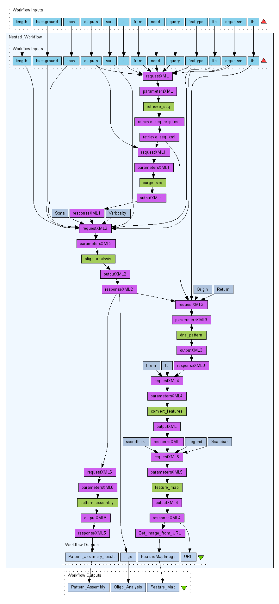
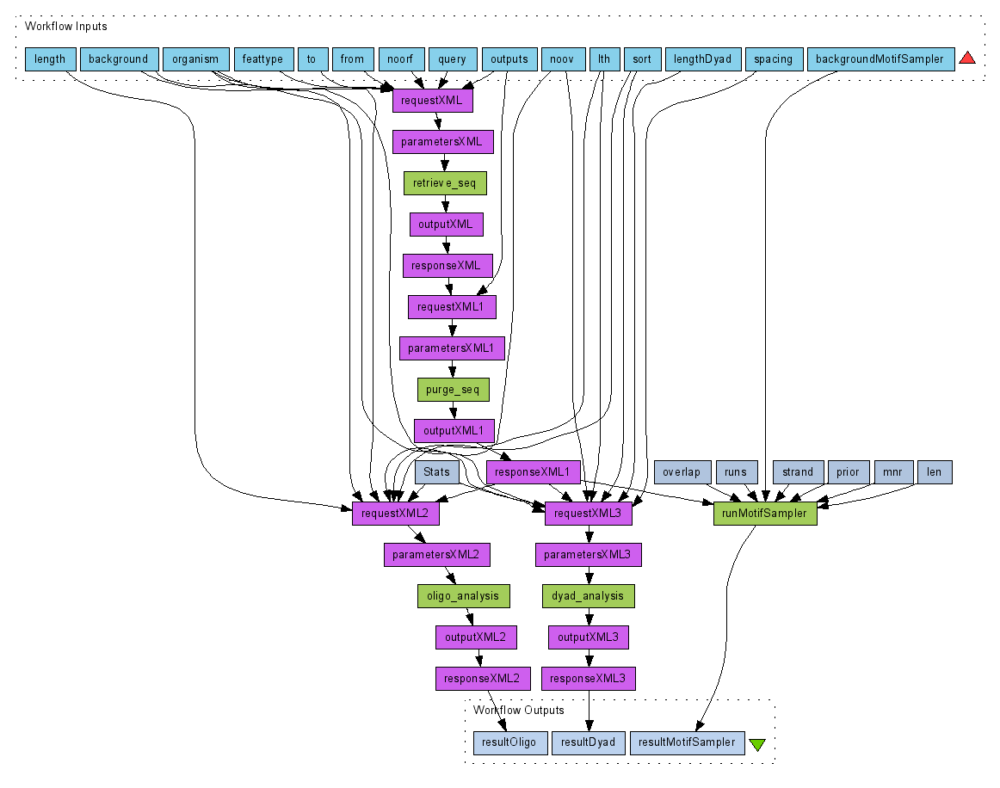
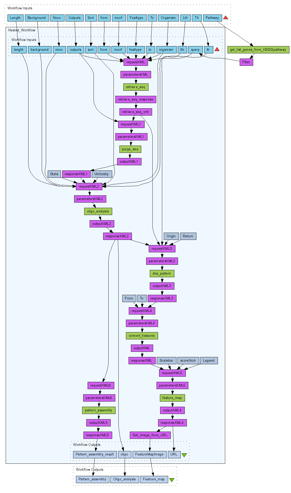

The Taverna workbench provides tools to build, edit and browse workflows. Its graphical interface facilitates an easy building and running of workflows over distributed computer resources. We present below some workflows. They use RSAT and other resources exposed as Web Services. They can be interconnected into reusable analysis workflows. You can execute those workflows with your own data. Meanwhile data file examples are also available for each workflow. HOW TO ? To execute these workflows in the Taverna Workbench, download the workflow (SCUFL XML format) on your machine and load it in Taverna with "File > Open workflow...". Alternatively, copy and paste the URL of the workflow download link into Taverna with "File > Open workflow location...". Sample input data are provided for each workflow. To use a sample input, download the file on your machine, then load this file in Taverna with "File > Run workflow >Load input". RSA-tools - Taverna workflows (developped by Eric Vervisch)
How to find the over-represented oligonucleotides in the upstream sequences of clustered genes?
 In this workflow, the following steps are performed: - first, upstream sequences of the genes are retrieved and purged for redundancy - second, over-represented hexanucleotides are discovered with oligo-analysis (motif discovery) - third, the discovered patterns are matched back to the retrieved sequences (pattern matching) - finally, a feature map showing the occurrences of the matches is drawn . ---
- Download Workflow File (SCUFL)
- Download Sample Input
(This gene cluster comes from the Harbison et al. (2004) experiments. The others are also available.)(click on the image to get the full size) How to compare the performance of different tools used to analyse upstream sequences of gene sets?
 In this workflow, we compare three different tools applied to upstream sequences of one gene set: - oligo-analysis and dyad-analysis from RSAT - and Motif Sampler - a Gibbs sampling algorithm. --- (click on the image to get the full size) How to find the over-represented oligonucleotides in the yeast upstream sequences of genes involved in the amino acid metabolism pathways?
 In this workflow, we download some gene lists from the KEGG PATHWAY database and the following steps are performed: - first, upstream sequences of the genes are retrieved and purged for redundancy - second, over-represented hexanucleotides are discovered with oligo-analysis (motif discovery) - third, the discovered patterns are matched back to the retrieved sequences (pattern matching) - finally, feature maps showing the occurrences of the matches are drawn . --- (click on the image to get the full size)
{kind=link}
{kind=link}
{kind=link}
{kind=link}
{kind=link}